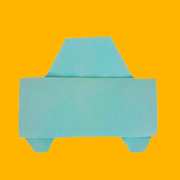

Origami Designs
About us
Follow us
Animal Origami Designs
Camel Design
 Click Here for Instruction Manual
Click Here for Instruction Manual
Interesting Facts About Camels
- When a camel finally does find water, he can drink up to 40 gallons in one go
- Camels have three sets of eyelids and two rows of eyelashes to keep sand out of their eyes
- Thanks to thick pads of skin on their chest and knees, camels can comfortably sit in very hot sand
Chameleon Design
 Click Here for Instruction Manual
Click Here for Instruction Manual
Interesting Facts About chameleons
- Chameleons are reptiles that are part of the iguana suborder
- Changing skin colour is an important part of communication among chameleons
- Most chameleons have a prehensile tail that they use to wrap around tree branches
Panda Design
 Click Here for Instruction Manual
Click Here for Instruction Manual
Interesting Facts About pandas
- An adult can eat 12–38 kilos of bamboo per day
- Giant pandas are good at climbing trees and can also swim
- Pandas have carnivorous teeth, but they eat bamboo and fruit
Vehicle Origami Designs
Plane Design
Car Design
